Last updated: 2026-07-27
Checks: 7 0
Knit directory:
immgenT-GP-analysis/analysis/
This reproducible R Markdown analysis was created with workflowr (version 1.7.2). The Checks tab describes the reproducibility checks that were applied when the results were created. The Past versions tab lists the development history.
Great! Since the R Markdown file has been committed to the Git repository, you know the exact version of the code that produced these results.
Great job! The global environment was empty. Objects defined in the global environment can affect the analysis in your R Markdown file in unknown ways. For reproduciblity it’s best to always run the code in an empty environment.
The command set.seed(1) was run prior to running the
code in the R Markdown file. Setting a seed ensures that any results
that rely on randomness, e.g. subsampling or permutations, are
reproducible.
Great job! Recording the operating system, R version, and package versions is critical for reproducibility.
Nice! There were no cached chunks for this analysis, so you can be confident that you successfully produced the results during this run.
Great job! Using relative paths to the files within your workflowr project makes it easier to run your code on other machines.
Great! You are using Git for version control. Tracking code development and connecting the code version to the results is critical for reproducibility.
The results in this page were generated with repository version 3fae8f8. See the Past versions tab to see a history of the changes made to the R Markdown and HTML files.
Note that you need to be careful to ensure that all relevant files for
the analysis have been committed to Git prior to generating the results
(you can use wflow_publish or
wflow_git_commit). workflowr only checks the R Markdown
file, but you know if there are other scripts or data files that it
depends on. Below is the status of the Git repository when the results
were generated:
Ignored files:
Ignored: .DS_Store
Ignored: .claude/
Ignored: analysis/.DS_Store
Ignored: analysis/.Rhistory
Ignored: analysis/assets/.DS_Store
Ignored: code/.DS_Store
Ignored: code/other/topic_flashier_20250212.R
Ignored: code/other/topic_wrapper_20250215_alldata_backfit.sh
Ignored: data
Ignored: experiments/
Ignored: figures/.DS_Store
Ignored: figures/Previous/.DS_Store
Ignored: figures/Previous/bits/.DS_Store
Ignored: figures/Previous/bits/Figure 1/.DS_Store
Ignored: figures/Previous/bits/Figure 2/.DS_Store
Ignored: figures/Previous/bits/Figure 3/.DS_Store
Ignored: figures/Previous/bits/Figure 4/.DS_Store
Ignored: figures/Previous/bits/Figure 6/.DS_Store
Ignored: figures/Previous/bits/Figure 7/.DS_Store
Ignored: figures/Previous/bits/Figure S1/.DS_Store
Ignored: figures/Previous/bits/Figure S2/.DS_Store
Ignored: figures/Previous/bits/Figure S3/.DS_Store
Ignored: figures/Previous/bits/Figure S6/.DS_Store
Ignored: figures/Previous/bits/Figure S7/.DS_Store
Ignored: figures/final-selected/.DS_Store
Ignored: figures/final-selected/Figure 1/.DS_Store
Ignored: figures/final-selected/Figure 2/.DS_Store
Ignored: figures/final-selected/Figure S4/.DS_Store
Ignored: log/
Ignored: output/Figure2/
Ignored: output/FigureS5/S5_cell_metadata.csv.gz
Ignored: plan/
Ignored: reorder/
Ignored: tables/
Ignored: tmp/
Note that any generated files, e.g. HTML, png, CSS, etc., are not included in this status report because it is ok for generated content to have uncommitted changes.
These are the previous versions of the repository in which changes were
made to the R Markdown (analysis/Figure3.Rmd) and HTML
(docs/Figure3.html) files. If you’ve configured a remote
Git repository (see ?wflow_git_remote), click on the
hyperlinks in the table below to view the files as they were in that
past version.
| File | Version | Author | Date | Message |
|---|---|---|---|---|
| Rmd | 3fae8f8 | Ziang Zhang | 2026-07-27 | 3M: pin Ctsw to the top rows alongside Fcer1g/Ccl5/Cd7 |
| html | 7ba1d40 | Ziang Zhang | 2026-07-27 | Build site: 3M ranked by max(score) |
| Rmd | ed623c5 | Ziang Zhang | 2026-07-27 | 3M: rank the top 30 by max(score), making it a real "up-regulated genes" panel |
| html | adaef21 | Ziang Zhang | 2026-07-27 | Build site: panel fixes and PDF-derived assets |
| html | 5b19858 | Ziang Zhang | 2026-07-27 | Build site. |
| Rmd | 91ee059 | Ziang Zhang | 2026-07-26 | Select each panel’s code block by name, not by line number |
| html | 91ee059 | Ziang Zhang | 2026-07-26 | Select each panel’s code block by name, not by line number |
| Rmd | 620afca | Ziang Zhang | 2026-07-24 | Align Fig3/4/5 section titles with current numbers; reletter Fig4 to a-e |
| html | 620afca | Ziang Zhang | 2026-07-24 | Align Fig3/4/5 section titles with current numbers; reletter Fig4 to a-e |
| Rmd | 2873ad2 | Ziang Zhang | 2026-07-16 | Unify Fig 3/4/5 panel filenames with new figure numbers |
| html | 2873ad2 | Ziang Zhang | 2026-07-16 | Unify Fig 3/4/5 panel filenames with new figure numbers |
| Rmd | b197499 | Ziang Zhang | 2026-07-16 | Restructure main figures (renumber + split Figure 1) |
| html | b197499 | Ziang Zhang | 2026-07-16 | Restructure main figures (renumber + split Figure 1) |
| html | 92021bf | Ziang Zhang | 2026-07-02 | Build site. |
| html | 827c89b | Ziang Zhang | 2026-07-02 | Build site. |
| Rmd | 8ac7f9f | Ziang Zhang | 2026-07-02 | Add data provenance notes to each script; remove conversational |
| Rmd | f9db962 | Ziang Zhang | 2026-07-02 | Simplify layout: drop old code/script folders, rename |
| html | c6e5086 | Ziang Zhang | 2026-07-02 | Build site. |
| html | 5a79883 | Ziang Zhang | 2026-07-02 | Build site. |
| Rmd | 2b0e445 | Ziang Zhang | 2026-07-02 | Fix GitHub source links to point at the new |
| html | cf1d0ac | Ziang Zhang | 2026-07-02 | Build site. |
| Rmd | 06b2461 | Ziang Zhang | 2026-07-02 | Initial commit: immgenT-GP-analysis |
| html | 06b2461 | Ziang Zhang | 2026-07-02 | Initial commit: immgenT-GP-analysis |
All panels are produced by script/Figure3.R.
The code below is shown for reference (not re-executed on this page);
the images are its pre-rendered output.
Data loading, shared across all panels below.
# Figure 3. GPs and lineages.
#
# Panels produced. NOTE the renumbering: this figure's published counterpart is
# figures/Previous/bits/Figure *2* (2A-2M), letter for letter. Full caption
# text: figures/Previous/bits/Figure 2/Figure2_caption.md.
# 3A Swarm plot of per-GP AUC (predicting major lineage), up-regulated
# GPs only, with GP3/22/29 force-highlighted.
# 3B Structure plot of 6 lineage-defining GPs across major lineages.
# 3C,3E,3G GP loading on the global MDE, for GP68, GP30, GP58.
# 3D,3F,3H Per-gene view (score vs. mean expression) for GP68, GP30, GP58.
# 3I MDE restricted to gdT/CD8aa/DN, colored by lineage.
# 3J,3K,3L GP loading on the gdT/CD8aa/DN MDE, for GP22, GP29, GP3.
# 3M Heatmap of the top-30 up-regulated gene scores for GP3, GP29, GP22.
#
# Source: ported from Figure_Lineage.R, which also produced the
# Figure S2 panels (see FigureS2.R) from the same L_pm_filtered/MDE setup.
#
# Panels 3C/3E/3G (GP68/30/58 on the *global* MDE) have no direct
# equivalent in the original script -- Figure_Lineage.R only plots
# GP68/30/58-defined structure/boxplots, never their global-MDE loading.
# Reconstructed here with the same plot_loadings_on_mde() styling used for
# panels 3J/3K/3L (the closest in-script precedent).
#
# Panels 3D/3F/3H and 3M are NOT from the original pre-refactor analysis
# code at all -- they're generated by the separate "immgen-signature"
# Shiny app (see code/R/volcano_helpers.R and code/R/cross_gp_helpers.R
# headers for the full provenance notes).
#
# Required inputs (data/) -- see code/README.md's "Data provenance" table
# for the full picture:
# igt1_96_..._ADTonly.Rds [primary input Seurat object]
# L_pm_filtered.rds, F_pm_filtered.rds [code/pipeline/01b_filter_cells.R]
# umap_result.rds [gap, no producer script here]
# level_1_AUC_list_figure_no_thymocytes_healthy.rds [code/pipeline/02_compute_auc.R]
# mean_shifted_log_expr.rds [gap, no producer script here]
library(ggplot2)
library(ggrepel)
library(dplyr)
library(tidyr)
library(tibble)
library(scattermore)
library(pheatmap)
library(fastTopics) # structure_plot()
data_path <- "data/"
figure_path <- "figures/final-selected/Figure 3/"
source("code/R/plot_utils.R") # lineage_colors()
source("code/R/lineage_plots.R") # plot_gp_swarm(), plot_loadings_on_mde()
source("code/R/volcano_helpers.R") # plot_gp_signature_volcano(), normalize_maxabs()
source("code/R/cross_gp_helpers.R") # plot_cross_gp_heatmap()
# ============================================================
# Load data
# ============================================================
seurat_meta <- readRDS(paste0(
data_path,
"igt1_96_withtotalvi20260206_clean_ADTonly.Rds"
))@meta.data
L_pm_filtered <- readRDS(paste0(data_path, "L_pm_filtered.rds"))
seurat_meta_filtered <- seurat_meta[rownames(L_pm_filtered), ]
mde_result <- readRDS(paste0(data_path, "umap_result.rds"))
colnames(mde_result) <- c("MDE_1", "MDE_2")
mde_result <- mde_result[rownames(L_pm_filtered), ]
df_mde <- as.data.frame(mde_result)
level_1_AUC_list <- readRDS(paste0(data_path, "level_1_AUC_list_figure_no_thymocytes_healthy.rds"))
# Rename K## to GP## for display consistency
colnames(L_pm_filtered) <- gsub("^K", "GP", colnames(L_pm_filtered))
colnames(level_1_AUC_list$auc) <- gsub(
"^K",
"GP",
colnames(level_1_AUC_list$auc)
)# ============================================================
# 3A: AUC swarm, up-regulated GPs only, GP3/22/29 forced highlight
# ============================================================
selected_lineage_in_order <- c("CD8", "CD4", "Treg", "gdT", "CD8aa", "Tz", "DN")
level_1_categories <- as.character(unique(
seurat_meta_filtered$annotation_level1
))
mean_loading_matrix <- t(sapply(level_1_categories, function(cat) {
cells_in_cat <- which(seurat_meta_filtered$annotation_level1 == cat)
colMeans(L_pm_filtered[cells_in_cat, , drop = FALSE], na.rm = TRUE)
}))
mean_loading_matrix_selected <- mean_loading_matrix[selected_lineage_in_order, ]
non_thymocyte_cells <- which(
seurat_meta_filtered$annotation_level1 != "thymocyte"
)
mean_loading_vec <- colMeans(
L_pm_filtered[non_thymocyte_cells, , drop = FALSE],
na.rm = TRUE
)
AUC_mat_selected <- level_1_AUC_list$auc[selected_lineage_in_order, ]
p_3A <- plot_gp_swarm(
AUC_mat_selected,
loading_mat = mean_loading_matrix,
overall_loading_vec = mean_loading_vec,
filter_positive = TRUE,
forced_highlights = list(
gdT = c("GP22", "GP29", "GP3"),
CD8aa = c("GP22", "GP29", "GP3"),
DN = c("GP22", "GP29", "GP3")
),
top_k_labels = 1,
threshold_line = 0.5,
title = "Up-regulated GP Predictive Performance (AUC)",
subtitle = "Up-regulated GPs (Loading >= Overall Mean); triangles mark forced highlights that are down-regulated",
y_label = "Area Under the Curve (AUC)",
italic_subtitle = TRUE
)
ggsave(
filename = paste0(figure_path, "3A.pdf"),
plot = p_3A,
width = 10,
height = 6
)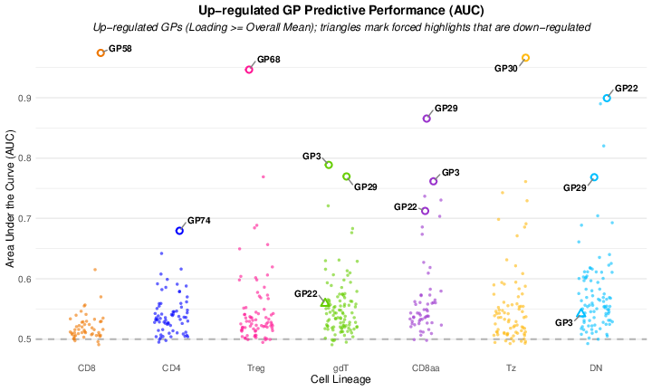
Fig. 3A. Swarm plot of per-GP predictive performance (one-vs-rest AUC, computed on healthy non-thymocyte cells) across the seven major lineages (CD8, CD4, Treg, gdT, CD8aa, Tz, DN). Only up-regulated GPs (mean loading >= the overall mean) are plotted as circles; triangles mark forced-highlight GPs (GP3, GP22, GP29) that are down-regulated in gdT, CD8aa, and DN; the dashed line marks AUC = 0.5, and the most predictive GP per lineage is labeled.
# ============================================================
# 3B: Structure plot of 6 lineage-defining GPs
# ============================================================
set.seed(1234)
color_coding <- ZemmourLib::immgent_colors$level1
level1_category_to_factor <- c(
"Treg" = "GP68",
"CD8" = "GP58",
"Tz" = "GP30",
"DN" = "GP22",
"CD8aa" = "GP29",
"gdT" = "GP3"
)
fit2 <- L_pm_filtered[, level1_category_to_factor, drop = FALSE]
cell_type <- seurat_meta[rownames(fit2), "annotation_level1"]
cells <- which(cell_type == "CD4" | cell_type == "CD8")
cells <- sample(cells, 1e5)
cells <- sort(c(
cells,
which(
cell_type != "CD4" &
cell_type != "CD8" &
cell_type != "thymocyte" &
cell_type != "DP"
)
))
p_3B <- structure_plot(
fit2[cells, ],
gap = 40,
n = 10000,
colors = color_coding[names(level1_category_to_factor)],
grouping = cell_type[cells]
) +
labs(y = "membership", color = "", fill = "") +
guides(fill = guide_legend(nrow = 1), color = guide_legend(nrow = 1)) +
theme(
legend.position = "bottom",
legend.direction = "horizontal",
legend.box = "horizontal",
axis.text.x = element_text(size = 10, angle = 45, hjust = 1),
axis.text.y = element_text(size = 12),
axis.title = element_text(size = 14, face = "bold"),
legend.text = element_text(size = 12),
legend.title = element_text(size = 13)
)
ggsave(
filename = paste0(figure_path, "3B.pdf"),
plot = p_3B,
width = 10,
height = 6,
dpi = 300
)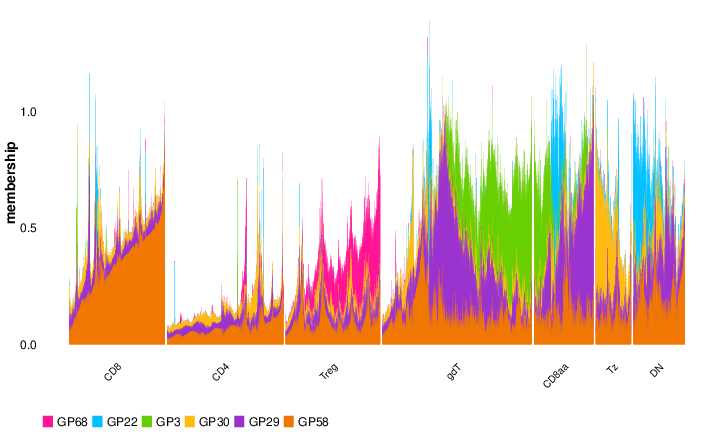
Fig. 3B. Structure plot of the membership (GP loading) of six lineage-defining GPs (GP58, GP68, GP30, GP3, GP29, GP22) across cells grouped by major lineages (CD8, CD4, Treg, gdT, CD8aa, Tz, DN); CD4 and CD8 cells are subsampled for visualization.
# ============================================================
# 3C/3E/3G: GP68, GP30, GP58 loading on the global MDE (reconstructed)
# ============================================================
p_3C <- plot_loadings_on_mde(
mde = df_mde,
loading = L_pm_filtered[rownames(df_mde), "GP68"],
factor_num = 68,
size = 0.6,
bg_alpha = 0.1,
bg_color = "grey90"
)
ggsave(
filename = paste0(figure_path, "3C.pdf"),
plot = p_3C,
width = 5,
height = 4
)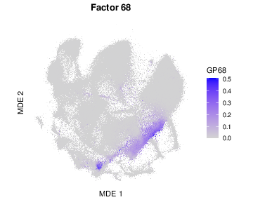
Fig. 3C. GP68 loading projected onto the global MDE embedding; each point is a cell, colored by its loading for GP68.
# ============================================================
# 3D/3F/3H: "signature volcano" per-gene view for GP68, GP30, GP58.
# NOT from the original pre-refactor analysis code -- generated by the
# separate "immgen-signature" Shiny app (see code/R/volcano_helpers.R header). n_label was
# bisected per-GP against the published PDF's byte size (apparently tuned
# per-panel interactively in the app); GP68 matches exactly, GP30/GP58
# within ~10 bytes.
# ============================================================
F_pm_filtered_3d <- readRDS(paste0(data_path, "F_pm_filtered.rds"))
colnames(F_pm_filtered_3d) <- paste0("GP", seq_len(ncol(F_pm_filtered_3d)))
F_pm_normalized_3d <- normalize_maxabs(F_pm_filtered_3d)
mean_shifted_log_expr <- readRDS(paste0(data_path, "mean_shifted_log_expr.rds"))
p_3D <- plot_gp_signature_volcano(
"GP68",
F_pm_normalized_3d,
mean_shifted_log_expr,
threshold = 0.1,
n_label = 100,
bg_alpha = 0.2
)
ggsave(
filename = paste0(figure_path, "3D.pdf"),
plot = p_3D,
width = 7,
height = 5.5
)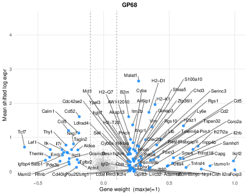
Fig. 3D. Per-gene view of GP68: each gene’s score in the GP (x-axis, scaled so the maximum |score| = 1) versus its mean shifted-log expression (y-axis); top genes are labeled.
p_3E <- plot_loadings_on_mde(
mde = df_mde,
loading = L_pm_filtered[rownames(df_mde), "GP30"],
factor_num = 30,
size = 0.6,
bg_alpha = 0.1,
bg_color = "grey90"
)
ggsave(
filename = paste0(figure_path, "3E.pdf"),
plot = p_3E,
width = 5,
height = 4
)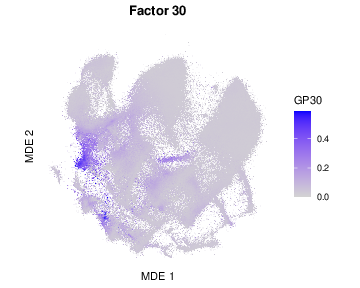
Fig. 3E. GP30 loading projected onto the global MDE embedding; each point is a cell, colored by its loading for GP30.
p_3F <- plot_gp_signature_volcano(
"GP30",
F_pm_normalized_3d,
mean_shifted_log_expr,
threshold = 0.1,
n_label = 100,
bg_alpha = 0.2
)
ggsave(
filename = paste0(figure_path, "3F.pdf"),
plot = p_3F,
width = 7,
height = 5.5
)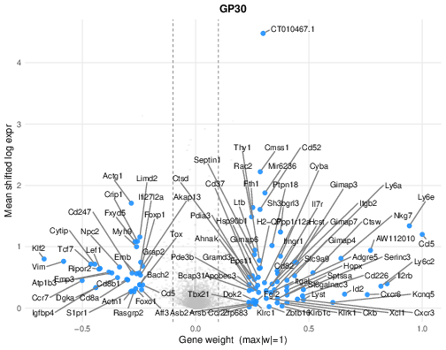
Fig. 3F. Per-gene view of GP30: each gene’s score in the GP (x-axis, scaled so the maximum |score| = 1) versus its mean shifted-log expression (y-axis); top genes are labeled.
p_3G <- plot_loadings_on_mde(
mde = df_mde,
loading = L_pm_filtered[rownames(df_mde), "GP58"],
factor_num = 58,
size = 0.6,
bg_alpha = 0.1,
bg_color = "grey90"
)
ggsave(
filename = paste0(figure_path, "3G.pdf"),
plot = p_3G,
width = 5,
height = 4
)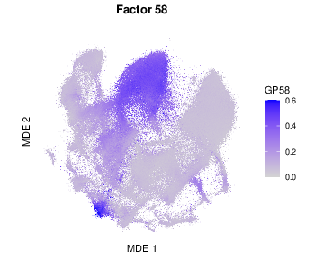
Fig. 3G. GP58 loading projected onto the global MDE embedding; each point is a cell, colored by its loading for GP58.
p_3H <- plot_gp_signature_volcano(
"GP58",
F_pm_normalized_3d,
mean_shifted_log_expr,
threshold = 0.1,
n_label = 83,
bg_alpha = 0.2
)
ggsave(
filename = paste0(figure_path, "3H.pdf"),
plot = p_3H,
width = 7,
height = 5.5
)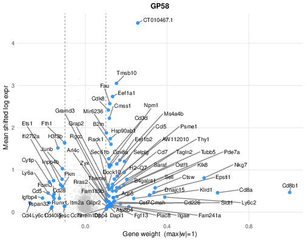
Fig. 3H. Per-gene view of GP58: each gene’s score in the GP (x-axis, scaled so the maximum |score| = 1) versus its mean shifted-log expression (y-axis); top genes are labeled.
# ============================================================
# 3I: MDE restricted to gdT/CD8aa/DN, colored by lineage
# (excludes proliferating / miniverse subsets)
# ============================================================
gcd_lineages <- c("gdT", "CD8aa", "DN")
gcd_cells <- seurat_meta_filtered$cellID[
seurat_meta_filtered$annotation_level1 %in%
gcd_lineages &
!(seurat_meta_filtered$annotation_level2_group %in%
c("proliferating", "miniverse"))
]
df_mde_gcd <- df_mde[gcd_cells, ]
df_mde_gcd$annotation_level1 <- factor(
seurat_meta_filtered[gcd_cells, "annotation_level1"],
levels = gcd_lineages
)
p_3I <- ggplot(df_mde_gcd, aes(x = MDE_1, y = MDE_2)) +
scattermore::geom_scattermore(
aes(color = annotation_level1),
pointsize = 1.2
) +
scale_color_manual(values = lineage_colors()[gcd_lineages]) +
coord_equal() +
theme_classic() +
labs(
title = "MDE: gdT / CD8aa / DN",
x = "MDE 1",
y = "MDE 2",
color = "Cell Type"
) +
theme(
legend.text = element_text(size = 10),
legend.key.size = unit(1.5, "lines")
) +
guides(color = guide_legend(override.aes = list(size = 4)))
ggsave(
filename = paste0(figure_path, "3I.pdf"),
plot = p_3I,
width = 5,
height = 5
)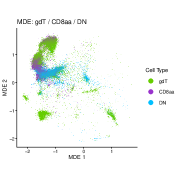
Fig. 3I. MDE restricted to gdT, CD8aa, and DN cells (excluding proliferating and miniverse subsets), colored by lineage.
# ============================================================
# 3J/3K/3L: GP22, GP29, GP3 loading on the gdT/CD8aa/DN MDE
# ============================================================
gp_letter <- c("GP22" = "3J", "GP29" = "3K", "GP3" = "3L")
for (gp_name in names(gp_letter)) {
gp_num <- as.numeric(sub("^GP", "", gp_name))
p_loading <- plot_loadings_on_mde(
mde = df_mde_gcd[, c("MDE_1", "MDE_2")],
loading = L_pm_filtered[gcd_cells, gp_name],
factor_num = gp_num,
size = 0.6,
bg_alpha = 0.1,
bg_color = "grey90"
)
ggsave(
filename = paste0(figure_path, gp_letter[gp_name], ".pdf"),
plot = p_loading,
width = 5,
height = 4
)
}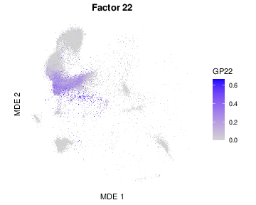
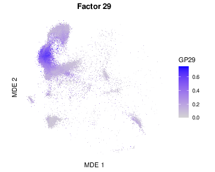
Fig. 3J-L. GP loading on the same gdT/CD8aa/DN MDE for GP22 (J), GP29 (K), and GP3 (L).
# ============================================================
# 3M: cross-GP heatmap, top-30 UP-REGULATED gene weights for GP3, GP29, GP22
# (immgen-signature app's mod_cross_gp.R heatmap mode; see
# code/R/cross_gp_helpers.R)
#
# Three deliberate departures from the published 2M, so 3M is not a
# reproduction of it (see script/README.md):
# - rank_by = "pos": top 30 by max(score), i.e. genuinely up-regulated,
# instead of the app's max|score| (see the note at the call below)
# - column order GP3, GP29, GP22 (the app-faithful order is GP3, GP22, GP29)
# - Fcer1g/Ccl5/Cd7/Ctsw pinned to the top 4 rows via `pin_top`
# The last two were settled first, against the app-faithful version; the
# ranking change came out of experiments/fig3m_updown_ranking/.
# ============================================================
F_pm_filtered_3m <- readRDS(paste0(data_path, "F_pm_filtered.rds"))
colnames(F_pm_filtered_3m) <- paste0("GP", seq_len(ncol(F_pm_filtered_3m)))
F_pm_norm_3m <- normalize_maxabs(F_pm_filtered_3m)
common_genes_3m <- intersect(rownames(F_pm_norm_3m), names(mean_shifted_log_expr))
gps_3m <- c("GP3", "GP29", "GP22")
mat_3m <- F_pm_norm_3m[common_genes_3m, gps_3m, drop = FALSE]
p_3M <- plot_cross_gp_heatmap(
mat_3m, gps_3m,
# rank_by = "pos" makes this a genuine "top 30 up-regulated genes" panel:
# candidates are the genes positive in at least one of the three GPs
# (direction = "pos"), ranked by max(score) across them.
#
# This is a deliberate change from the published 2M, which used the app's
# rank-by-max|score| and so admitted 9 genes on the strength of a large
# NEGATIVE score, each let through the "positive somewhere" gate by a token
# +0.01..+0.12 elsewhere (CT010467.1 -0.91 in GP22, Cmss1, Tmsb4x, Ms4a4b,
# Cd52, Mir6236, Ppia, Malat1, Ly6e -- the blue block at the bottom of the
# published panel). Ranking on max(score) replaces them with the next 9
# genuinely up-regulated genes: Anxa2, Prkch, Itm2b, Klra1, Cd3e, Nr4a2,
# Klre1, Chn2, Klrk1 -- which brings GP22's NK-receptor set (Klra1/Klre1/
# Klrk1, alongside the Klra7/Klrd1 already here) into the figure.
# See experiments/fig3m_updown_ranking/ for the side-by-side that decided it.
feat_label = "Gene", n_genes = 30, direction = "pos", rank_by = "pos",
threshold = 0.05, colorscheme = "bwr", cluster_r = TRUE, cluster_c = FALSE,
pin_top = c("Fcer1g", "Ccl5", "Cd7", "Ctsw")
)
ph_3m <- max(4, 2 + 30 * 0.14)
pw_3m <- max(5, 3 + length(gps_3m) * 0.8)
ggsave(filename = paste0(figure_path, "3M.pdf"), plot = p_3M, width = pw_3m, height = ph_3m)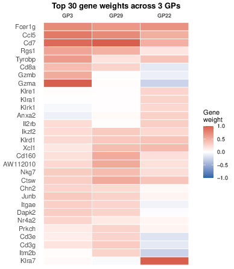
Fig. 3M. Heatmap of the 30 most up-regulated genes across GP3, GP29 and GP22: of the genes with a positive score in at least one of the three, the 30 with the highest score across them. Gene scores are scaled so that each GP’s largest absolute score is 1 (blue, negative; red, positive), and a gene selected for one GP can still be negative in another. Rows are hierarchically clustered, with Fcer1g, Ccl5, Cd7 and Ctsw pinned to the top.
sessionInfo()R version 4.5.1 (2025-06-13)
Platform: aarch64-apple-darwin20
Running under: macOS Sequoia 15.6.1
Matrix products: default
BLAS: /System/Library/Frameworks/Accelerate.framework/Versions/A/Frameworks/vecLib.framework/Versions/A/libBLAS.dylib
LAPACK: /Library/Frameworks/R.framework/Versions/4.5-arm64/Resources/lib/libRlapack.dylib; LAPACK version 3.12.1
locale:
[1] en_CA/en_CA/en_CA/C/en_CA/en_CA
time zone: America/Chicago
tzcode source: internal
attached base packages:
[1] stats graphics grDevices utils datasets methods base
loaded via a namespace (and not attached):
[1] vctrs_0.7.3 cli_3.6.6 knitr_1.50 rlang_1.2.0
[5] xfun_0.55 stringi_1.8.7 otel_0.2.0 promises_1.5.0
[9] jsonlite_2.0.0 workflowr_1.7.2 glue_1.8.1 rprojroot_2.1.1
[13] git2r_0.36.2 htmltools_0.5.9 httpuv_1.6.16 sass_0.4.10
[17] rmarkdown_2.30 evaluate_1.0.5 jquerylib_0.1.4 tibble_3.3.0
[21] fastmap_1.2.0 yaml_2.3.12 lifecycle_1.0.5 whisker_0.4.1
[25] stringr_1.6.0 compiler_4.5.1 fs_1.6.6 Rcpp_1.1.1-1.1
[29] pkgconfig_2.0.3 later_1.4.4 digest_0.6.39 R6_2.6.1
[33] pillar_1.11.1 magrittr_2.0.5 bslib_0.9.0 tools_4.5.1
[37] cachem_1.1.0